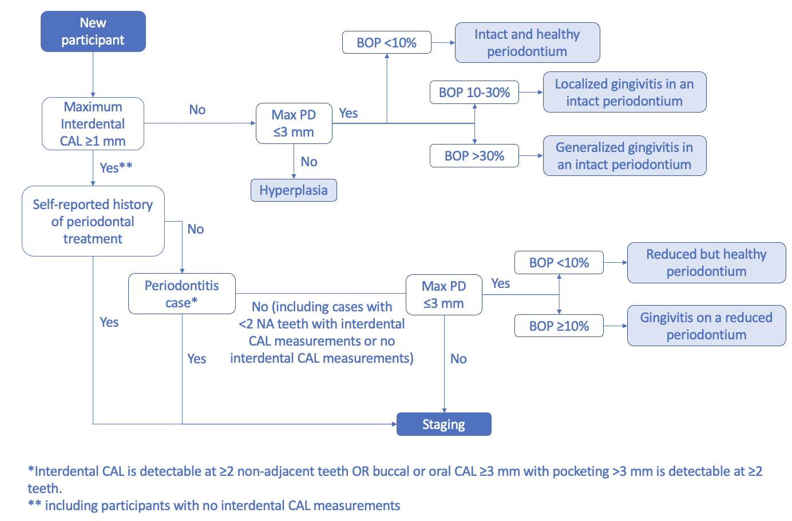

Special cases and non-periodontitis patient
Contents
Special cases and non-periodontitis patient¶
%matplotlib inline
# Load the "autoreload" extension
%load_ext autoreload
# always reload modules
%autoreload 2
# black formatter for jupyter notebooks
#%load_ext nb_black
# black formatter f|or jupyter lab
%load_ext lab_black
%run ../src/notebook_env.py
---------------------------------
Working on the host: unknownA07817A930E2
---------------------------------
Python version: 3.9.7 (default, Sep 16 2021, 08:50:36)
[Clang 10.0.0 ]
---------------------------------
Python interpreter: /opt/miniconda3/envs/idz-parostatus/bin/python
---------------------------------
Root (ROOT) directory is set to /Users/jokr/Documents/Projekte_Extern/IDZ/DMS-V-ParoStatus
---------------------------------
data (DATA) directory is set to /Users/jokr/Documents/Projekte_Extern/IDZ/DMS-V-ParoStatus/data
---------------------------------
Attaching the following source folders:
/Users/jokr/Documents/Projekte_Extern/IDZ/DMS-V-ParoStatus/src
Import modules
import numpy as np
import pandas as pd
import matplotlib.pyplot as plt
import re
Load cohort dataset¶
fp = DATA.joinpath("processed")
fn = "dmsV_cohort.parquet"
file = fp.joinpath(fn)
assert file.exists()
data = pd.read_parquet(file)
data.shape
(980, 748)
The Periodontitis case¶
Special Cases¶
staged_patients = {}
Too few permanent teeth¶
Less than 2 non-adjacent teeth with interdental CAL measurements (interdental CAL measurement present either on one tooth or on two adjacent teeth) or less than 2 teeth with buccal or oral CAL measurements, but maximum CAL non-missing. In this case the periodontitis case criterion was not assessible (due to the presence of only one tooth with CAL measurements; no non-adjacent tooth with CAL measurement available).
from util import less_than_two_non_adjacent_teeth, FdiNomenclaure
fdi = FdiNomenclaure()
pattern = r"maxCALbo\d{2}$"
cols = data.columns[[bool(re.match(pattern, c)) for c in data.columns]]
boCAL_geq2_NA_tooth = data[cols].copy()
boCAL_geq2_NA_tooth.columns = [str(x[-2:]) for x in boCAL_geq2_NA_tooth.columns]
boCAL_geq2_NA_tooth = boCAL_geq2_NA_tooth[[str(x) for x in fdi.full_dentition]]
boCAL_geq2_NA_tooth_idx = less_than_two_non_adjacent_teeth(
boCAL_geq2_NA_tooth, fdi.full_dentition
)
# boCAL_geq2_NA_tooth_idx
pattern = r"maxCALappr\d{2}$"
cols = data.columns[[bool(re.match(pattern, c)) for c in data.columns]]
interCAL_geq2_NA_tooth = data[cols].copy()
interCAL_geq2_NA_tooth.columns = [str(x[-2:]) for x in interCAL_geq2_NA_tooth.columns]
interCAL_geq2_NA_tooth = interCAL_geq2_NA_tooth[[str(x) for x in fdi.full_dentition]]
interCAL_geq2_NA_tooth_idx = less_than_two_non_adjacent_teeth(
interCAL_geq2_NA_tooth, fdi.full_dentition
)
# interCAL_geq2_NA_tooth_idx
idx = set(list(boCAL_geq2_NA_tooth_idx) + list(interCAL_geq2_NA_tooth_idx))
too_few_teeth = data.loc[idx]
too_few_teeth.shape
(51, 748)
If maximum CAL is ≥1 mm and maximum PD is ≤3 mm, participants are categorized as having either a ”reduced but healthy periodontium in a non-periodontitis patient” (BOP<10%) or “gingivitis on a reduced periodontium in a non-periodontitis patient” (see Figure 1) (BOP≥10%) (Chapple et al., 2018).
cond_CAL_geq1 = too_few_teeth[["maxCALappr", "maxCALbo"]].max(axis=1) >= 1
pattern = r"st\d{2}\w{4}$"
cols = too_few_teeth.columns[[bool(re.match(pattern, c)) for c in data.columns]]
cond_PD_leq3 = too_few_teeth[cols].max(axis=1) <= 3
few_teeth_case = too_few_teeth.loc[cond_CAL_geq1 & cond_PD_leq3].copy()
few_teeth_case.shape[0]
15
lookup = {
"< 10 % bleeding sites": "reduced but healthy periodontium in a non-periodontitis patient",
"10-30 % bleeding sites": "gingivitis on a reduced periodontium in a non-periodontitis patient",
"> 30 % bleeding sites": "gingivitis on a reduced periodontium in a non-periodontitis patient",
}
few_teeth_case["classification"] = few_teeth_case["bop_cat"].apply(
lambda x: lookup.get(x, np.nan)
)
Participants are identified as periodontitis cases, if maximum CAL is ≥1 mm and maximum PD is ≥4 mm.
cond_CAL_geq1 = too_few_teeth[["maxCALappr", "maxCALbo"]].max(axis=1) >= 1
pattern = r"st\d{2}\w{4}$"
cols = too_few_teeth.columns[[bool(re.match(pattern, c)) for c in data.columns]]
cond_PD_geq4 = too_few_teeth[cols].max(axis=1) >= 4
few_teeth_staging = too_few_teeth.loc[cond_CAL_geq1 & cond_PD_geq4].copy()
staged_patients["few_teeth_staging"] = few_teeth_staging
few_teeth_staging.shape[0]
36
print(data.shape[0])
try:
data = data.drop(few_teeth_case.index)
data = data.drop(few_teeth_staging.index)
except:
pass
print(data.shape[0])
980
929
No CAL measurements¶
If maximum PD is ≤3 mm, gingivitis criteria are screened and the participant is categorized as having a ”reduced but healthy periodontium in a non-periodontitis patient” (BOP<10%) or a “gingivitis on a reduced periodontium in a non-periodontitis patient” (BOP≥10%) (Chapple et al., 2018).
If maximum PD is ≥4 mm, the participant is identified as a periodontitis case and is classified according to the staging criteria (Papapanou et al., 2018).
no_CAL = data.loc[data["maxCALappr"].isnull()]
no_CAL.shape
(122, 748)
pattern = r"st\d{2}\w{4}$"
cols = no_CAL.columns[[bool(re.match(pattern, c)) for c in no_CAL.columns]]
cond_PD_leq3 = no_CAL[cols].max(axis=1) <= 3
no_CAL_gingivitis_case = no_CAL[cond_PD_leq3].copy()
no_CAL_gingivitis_case.shape
lookup = {
"< 10 % bleeding sites": "reduced but healthy periodontium in a non-periodontitis patient",
"10-30 % bleeding sites": "gingivitis on a reduced periodontium in a non-periodontitis patient",
"> 30 % bleeding sites": "gingivitis on a reduced periodontium in a non-periodontitis patient",
}
no_CAL_gingivitis_case["classification"] = no_CAL_gingivitis_case["bop_cat"].apply(
lambda x: lookup.get(x, np.nan)
)
no_CAL_staging_case = no_CAL[~cond_PD_leq3]
staged_patients["no_CAL_staging_case"] = no_CAL_staging_case
no_CAL_staging_case.shape
(90, 748)
print(data.shape[0])
try:
data = data.drop(no_CAL_gingivitis_case.index)
data = data.drop(no_CAL_staging_case.index)
except:
pass
print(data.shape[0])
929
807
Participants with a self-reported history of periodontal treatment¶
Although Chapple et al. (2018) proposed that “a periodontitis case cannot simultaneously be defined as a gingivitis case” and therefore, “a patient with a history of periodontitis, with gingival inflammation is still a periodontitis case”, designation as a periodontitis case is complicated by the fact, that participants might present post-treatment maximum PDs of ≤3 mm and that the a priori treatment status is usually unknown. Furthermore, it is probable that self-report of periodontal treatment underlies reporting bias, confusing professional dental cleaning with periodontal treatment. To reflect these insecurities, available periodontal data should be considered when classifying a participant with self-reported periodontal treatment.
parobeh = data.loc[data["parobeh"] == "Ja"]
parobeh.shape[0]
30
Thus, we propose the following distinction. If maximum CAL is equal to zero and maximum PD is ≤3 mm, participants are classified according to the gingivitis scheme (Chapple et al., 2018). They are further classified as having “periodontal health” (BOP<10%), “localized gingivitis” (BOP 10—30%), or “generalized gingivitis” (BOP>30%). In these situations, it can be assumed that (self-reported) periodontal treatment either presents some form of overtreatment (as the assumed post-treatment maximum CAL is equal to zero) or was subject to reporting bias.
cond_CAL0 = parobeh[["maxCALappr", "maxCALbo"]].max(axis=1) == 0
pattern = r"st\d{2}\w{4}$"
cols = data.columns[[bool(re.match(pattern, c)) for c in data.columns]]
cond_PD_leq3 = parobeh[cols].max(axis=1) <= 3
parobeh_gingivitis_case = parobeh.loc[cond_CAL0 & cond_PD_leq3].copy()
parobeh_gingivitis_case.shape[0]
0
lookup = {
"< 10 % bleeding sites": "periodontal health",
"10-30 % bleeding sites": "localized gingivitis",
"> 30 % bleeding sites": "generalized gingivitis",
}
parobeh_gingivitis_case["classification"] = parobeh_gingivitis_case["bop_cat"].apply(
lambda x: lookup.get(x, np.nan)
)
parobeh_gingivitis_case.shape
(0, 749)
If maximum CAL is equal to zero and maximum PD is ≥4 mm, “Hyperplasia” was assigned. In this situation, again, it can be assumed that (self-reported) periodontal treatment either presents some form of overtreatment (as the assumed post-treatment maximum CAL is equal to zero) or was subject to reporting bias.
cond_CAL0 = parobeh[["maxCALappr", "maxCALbo"]].max(axis=1) == 0
pattern = r"st\d{2}\w{4}$"
cols = parobeh.columns[[bool(re.match(pattern, c)) for c in parobeh.columns]]
cond_PD_geq4 = parobeh[cols].max(axis=1) >= 4
parobeh_hyperplasia_case = parobeh.loc[cond_CAL0 & cond_PD_geq4].copy()
parobeh_hyperplasia_case["classification"] = "hyperplasia"
parobeh_hyperplasia_case.shape[0]
0
If maximum CAL is ≥1 mm, the participants is identified as being a periodontitis case and staging is performed.
cond_CAL_geq1 = parobeh[["maxCALappr", "maxCALbo"]].max(axis=1) >= 1
parobeh_staging_case = parobeh.loc[cond_CAL_geq1].copy()
staged_patients["parobeh_staging_case"] = parobeh_staging_case
parobeh_staging_case.shape
(30, 748)
print(data.shape[0])
try:
data = data.drop(parobeh_gingivitis_case.index)
data = data.drop(parobeh_hyperplasia_case.index)
data = data.drop(parobeh_staging_case.index)
except:
pass
print(data.shape[0])
807
777
Hyperplasia¶
When applying the 2017 classification to epidemiological data, it was necessary to introduce a new category, namely hyperplasia. Participants with no CAL and maximum PD ≥4 mm were classified as having hyperplasia.
cond_CAL0 = data[["maxCALappr", "maxCALbo"]].max(axis=1) == 0
pattern = r"st\d{2}\w{4}$"
cols = data.columns[[bool(re.match(pattern, c)) for c in data.columns]]
cond_PD_geq4 = data[cols].max(axis=1) >= 4
hyperplasia_case = data.loc[cond_CAL0 & cond_PD_geq4].copy()
hyperplasia_case["classification"] = "hyperplasia"
hyperplasia_case.shape
(1, 749)
print(data.shape[0])
try:
data = data.drop(hyperplasia_case.index)
except:
pass
print(data.shape[0])
777
776
Gingivitis scheme (Chapple et al., 2018)¶
Criteria¶
If maximum CAL is 0 and maximum PD is $\leq$ 3 mm, then based on their BOP value, participants are further classified as having an “intact and healthy periodontium” (BOP<10%), “localized gingivitis in an intact periodontium” (BOP 10-30%), or “generalized gingivitis in an intact periodontium” (BOP>30%).
If maximum CAL is 0 and maximum PD is $\geq$ 4 mm, then they are classified as having hyperplasia!
maxCALappr: maximaler interdentaler CAL (mm)
maxCALbo: maximaler bukkaler/oraler CAL (mm)
cond_CAL0 = data[["maxCALappr", "maxCALbo"]].max(axis=1) == 0
pattern = r"st\d{2}\w{4}$"
cols = data.columns[[bool(re.match(pattern, c)) for c in data.columns]]
cond_PD_leq3 = data[cols].max(axis=1) <= 3
gingivitis_case = data.loc[cond_CAL0 & cond_PD_leq3].copy()
print(gingivitis_case.shape)
lookup = {
"< 10 % bleeding sites": "intact and healthy periodontium",
"10-30 % bleeding sites": "localized gingivitis in an intact periodontium",
"> 30 % bleeding sites": "generalized gingivitis in an intact periodontium",
}
gingivitis_case["classification"] = gingivitis_case["bop_cat"].apply(
lambda x: lookup.get(x, np.nan)
)
(5, 748)
cond_PD_geq4 = data[cols].max(axis=1) >= 4
gingivitis_hyperplasia_case = data.loc[cond_CAL0 & cond_PD_geq4].copy()
gingivitis_hyperplasia_case["classification"] = "hyperplasia"
gingivitis_hyperplasia_case.shape
(0, 749)
print(data.shape[0])
try:
data = data.drop(gingivitis_case.index)
data = data.drop(gingivitis_hyperplasia_case.index)
except:
pass
print(data.shape[0])
776
771
Summary¶
staged_patients.keys()
dict_keys(['few_teeth_staging', 'no_CAL_staging_case', 'parobeh_staging_case'])
_staged_patients = []
for _, v in staged_patients.items():
_staged_patients.append(v)
special_staging_cases = pd.concat(_staged_patients)
special_staging_cases.shape
(156, 748)
non_periodontitis_patient = {
"no_CAL_gingivitis_case": no_CAL_gingivitis_case,
"parobeh_gingivitis_case": parobeh_gingivitis_case,
"parobeh_hyperplasia_case": parobeh_hyperplasia_case,
"hyperplasia_case": hyperplasia_case,
"gingivitis_case": gingivitis_case,
"gingivitis_hyperplasia_case": gingivitis_hyperplasia_case,
"few_teeth_case": few_teeth_case,
}
_non_periodontitis_patient = []
for _, v in non_periodontitis_patient.items():
_non_periodontitis_patient.append(v)
_non_periodontitis_patient = pd.concat(_non_periodontitis_patient)
_non_periodontitis_patient.shape[0]
53
_special_staging_cases = special_staging_cases.copy()
_special_staging_cases["classification"] = "staging"
ax = (
pd.concat([_special_staging_cases, _non_periodontitis_patient])["classification"]
# special_cases["classification"]
.value_counts().plot.barh()
)
for container in ax.containers:
ax.bar_label(container, size=15)
ax.set_ylabel("")
ax.grid(axis="x")
980 - 156 - 53
771
Save to disk¶
print(data.shape)
print(special_staging_cases.shape)
print(_non_periodontitis_patient.shape)
(771, 748)
(156, 748)
(53, 749)
out_data = pd.concat([data, special_staging_cases])
out_data.shape
(927, 748)
fn = "dmsV_periodontitis_cases.parquet"
fp = DATA.joinpath("processed", fn)
out_data.to_parquet(fp)
assert fp.exists(), fp
fn = "dmsV_non_periodontitis_patient.parquet"
fp = DATA.joinpath("processed", fn)
_non_periodontitis_patient.to_parquet(fp)
assert fp.exists(), fp
Save dict¶
out = (staged_patients, non_periodontitis_patient)